Relavent Links
Click here to download the main game
Click here to see the full document/proposal
Click here to see the prototype in adobeXD
Click here to see the level design document
Click here to see the UI and art I designed
Roles taken in this Project
- UI/UX designer/researcher/documentor
- Usability tester
- Scrum Master
- Main developer
- AdobeXD prototype editor
- Level Designer
- Modeling and VFX for the objects inside and outside of the house
- Group Leader
- Author of the script/story
- Video Editor
Introduction
What is Whiskered Inquiry?
Whiskred Inquiry is a first person visual novel, mystery adventure game, where you the player have to gather evidence and defend your your best friend and client, Buddy, at court, who was framed for murder of his ex-partner, Sunshine. Whiskred Inquiry is meant to be a game made for compueters to play.
To promote the main game, we proposed the idea of an easy and accessible Spin-Off App to show the art from the original game and to promote the characters of the game, so they would enjoy the app and would try the original game after playing it for a while. The full Proposal, done by me, can be seen in detail through the buttons on the left, or you can click "here", as I will show a summarised version of my documentation/proposal. We even made a prototype version of it which can be accessed on the buttons on the left, or you can click "here".
What is Whiskered Inquiry – trials and debates ( WITD )?
Whiskered inquiry – trials and debates ( WITD) is a spin off game of our main game called Whiskered inquiry. In WITD, you can create an account and log in, for daily rewards, tasks, gacha ( “Gacha games are games that tempt you into spending real-world money in return for random rewards, which will vary in both quality and worth.” ) (Randell, 2023),the main debate feature, which is a turn based, where you can debate others with the correct card type, the lesser turns and time taken, will lead to a higher score on the leader board, and which it will refresh and reward players for their scores.
Core Objectives
- A user who can collect a bunch of cards with cute art of cats
- A user who can enjoy a simple turn-based game
Competitive Analysis

We performed competitive analysis towards 3 games which are similar to a final app we have in mind, the three games are Tears Of Themis, Fate Grand Order ( FGO ), and Touhou Lost World, to learn the advantages and disadvantages of them so we could potentially apply it to our final app, which can all be seen in more detail in the document
Conclusion table of competitive anaylysis

HEART Map
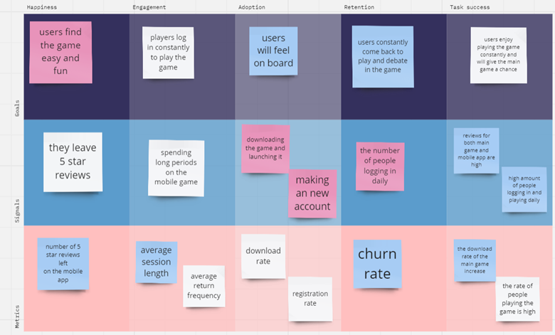This is our HEART map done for our project
Persona
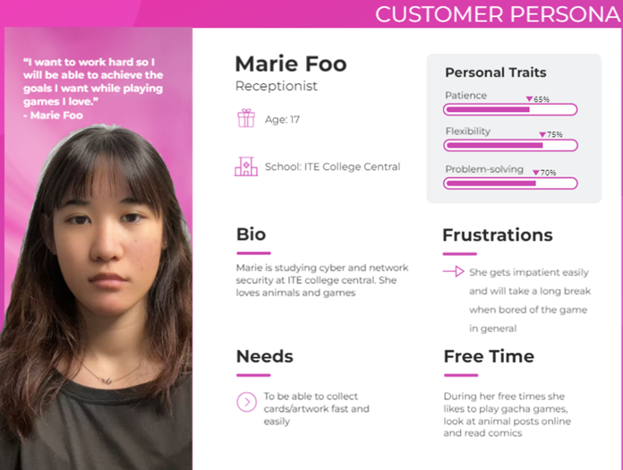Empathy Map
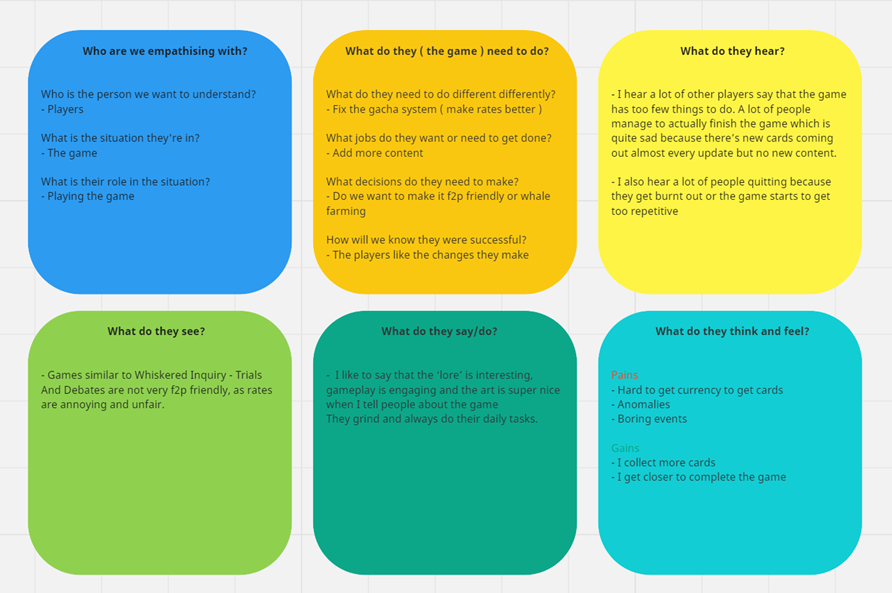Day In A Life
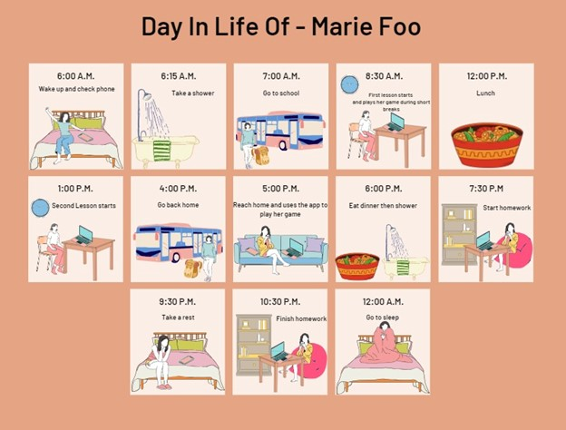Functions
1. Logging In/Registering
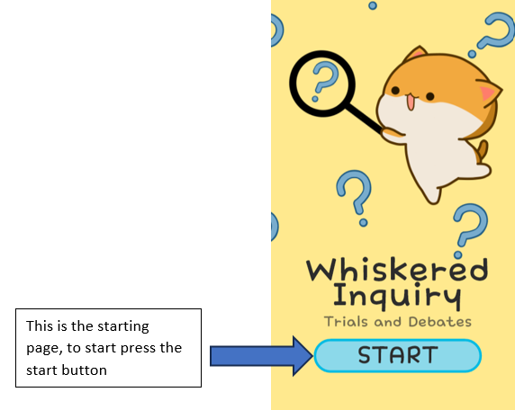 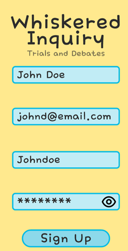
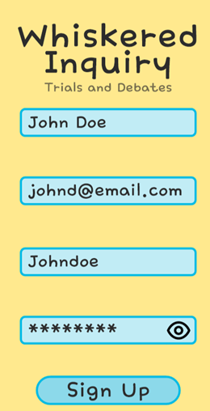
Players are able to log in/ sign up to save their data in the game. If players forget their passwords they can also refresh it by sending an email to themselves for security reasons
2. Daily Rewards
Players receive daily rewards like an advent calendar upon logging in, encouraging consistent play for valuable items like coins and XP bottles. Missing a day risks losing out on rewards, motivating players to maintain their streak.
Players can check how many days they have logged in for through the home page.
3. Daily Tasks
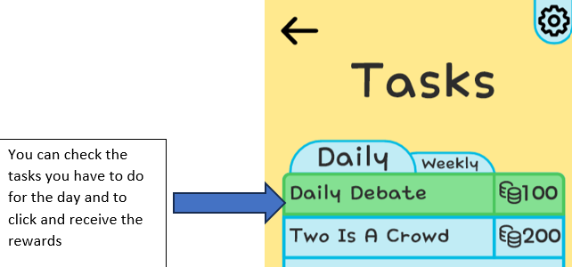Players are incentivized to log in daily and complete tasks for rewards, encouraging engagement and retention. Daily tasks are manageable, ensuring that players don't feel overwhelmed, while weekly tasks offer bigger rewards, encouraging longer play sessions. The fear of missing out on rewards motivates players to stay active, enhancing overall retention and enjoyment.
4. Debates
The debate feature is the main part of the app where players must pick the correct type of card to debate the enemy's statement with, within a limited amount of turns and time. This debate feature is inspired by the main game where you have to talk and debate your way through finding the truth of a case ( in this image above the player is looking through the witness’s testimony and will bring out evidence to debate the witness's testimony )
Players can access to play the main gameplay through the main page, then they can click on the silouette cat to start debating with them. ( the location of the map is directly from the main game )

The game play acts similarly to scissors paper stone, where different types can defeat the other type. There are three types in this game, yellow, which beats purple, purple which beats purple and blue which beats yellow.
In the debate minigame, players must select cards of the correct type to counter the NPC's arguments. Each NPC has a health bar that decreases as players counter their statements. Winning requires strategic card selection within a limited number of turns. Faster completion earns higher scores for the leaderboard. When they win they earn back rewards.
5. Gacha
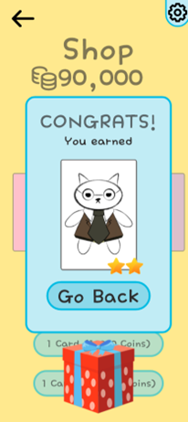Players can use coins to pull for new cards via the gacha function, featuring art directly from the game. One pull costs 10,000 coins, while a 10-pull guarantees a 3-star card for 100,000 coins. To address player concerns about low drop rates, a shop offers specific cards at a higher price, ensuring players get the card they want. This motivates players to play more to earn the coins needed for desired cards.
6. Edit Teams
The player would be able to edit the team to battle with the right types and stats for the following debate battle, and to take a look at their collection and the art.
7. Leader Board
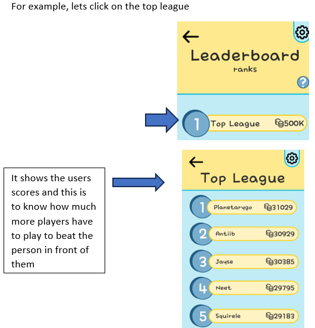The leaderboard ranks players based on their debate performance, considering speed and turn count. Faster victories and fewer turns earn higher scores. Players advance through leagues based on rankings, with better rewards in higher leagues. Top 5 rankings lead to promotion, while finishing last results in demotion. League standings update weekly, refreshing every Tuesday and Friday, with scores finalized on Thursday and Monday. This encourages regular play for improved rewards and personal achievement.
8. Settings
In the app, you can adjust the volume, check your account details, find our contact page, TOS and credits.
Site Map

User Journey
Logging In
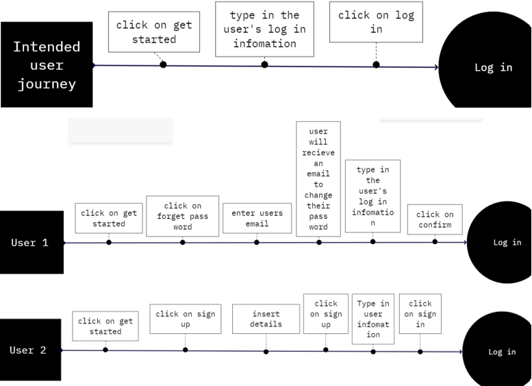Signing up
Tasks
Debate Battle
Edit team
Buying Cards
Usability Test
I had interviewed our persona for our usability tests
Main Game Usability Test
App Prototype Usability Test
Physical proposal
We proposed bringing Whiskered Inquiry to popular game consoles like the Nintendo Switch and PS5, leveraging their power and controller functionality. These consoles are among the best-selling, with the Switch leading in units sold and the PS5 in dollar sales. Both have sufficient power to run the game smoothly. For instance, the Switch can reach 1,020MHz on the CPU when docked. The PS5 boasts an eight-core AMD Zen 2 CPU with variable frequency up to 3.5GHz. Expanding to consoles ensures wider accessibility and enjoyable gameplay experiences. In the document we went through all the potential controls as well.
Switch

PS5
Mobile Phones
Wireframe
Here is the wireframe done by one of my team mates, which can be seen more in detail here.
Rationale of art style
The art style of the app and main game is this cute simple and fuzzy look, especially for the cats. The reason why we decided to target this style and cats is that many people out there want to play a fun yet puzzling game with a cute art style. Click on the buttons on the side or click here, to see the UI and art I designed for this project